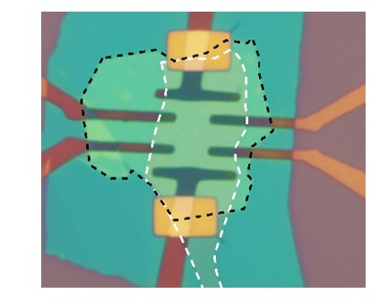
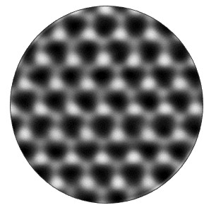

研究方向1：二维材料的先进加工与集成
- 无损原子刻蚀技术。成功开发出同时满足‘原子级加工精度’ 和‘非侵入式’两大优点的半导体超精密刻蚀技术。在国际上首次展示了具有原子精度的无损数字式刻蚀能力，每次刻蚀可完美地减薄一层，且刻蚀后的半导体性能（即，晶格缺陷和电学迁移率）保持不变；整套工艺与CMOS完全兼容，结合光刻技术可实现复杂的原子级厚度图案雕刻【Nat. Commun. 2022】 。
- 超净介质包覆的晶体管。利用范德华堆垛技术，开发出在超晶六方氮化硼介质上先电极后沟道的二维材料的晶体管构筑方法，晶体管电学性能优异，基本无电学回滞、低温迁移率基本保持在1000 cm2V-1s-1以上【ACS Appl. Mater. Interfaces. 2022】 。
- 精准片上集成技术。通过开发液相纳米沉降和电极锚固等异质集成关键技术，成功解决大规模石墨烯阵列跨台阶集成的工艺难题，实现了精准的石墨烯/硅阵列集成，并演示2×2四象限光探测器阵列。精准的三维集成工艺为大面积二维原子晶体与硅融合的片上集成应用开拓了一条新思路【ACS Nano 2019】 。
- 石墨烯电子器件。在器件设计上作出创新，利用极性自适应和超高效率顶栅操控，在国际上首次获得具备电压增益（约7）和匹配输入输出特性的石墨烯电压放大器。该结果为使用高迁移率石墨烯发展级联式高频电压振荡源及相关应用提供了可行的方案。该工作受到国际关注，被欧盟“旗舰计划”路线图中评价为“第一次实现”，受邀至美国物理协会（APS）2011年度 March Meeting 新闻发布会演讲，还受到《日经产业新闻》、《日刊工业新闻》和《化学工业日报》等媒体报道。【Nano Lett. 2010， ACS Nano 2011，Small 2011】
-
代表性论文
- Nat. Commun. 13(1):1844-1844 (2022).
- Appl. Phys. Lett. 120(27):27XXXX-27XXXX (2022).
- ACS Appl. Mater. Interfaces. 14(16):18697-18703 (2022).
- ACS Nano. 13(2):2654-2662 (2019).
- Small. 7(11):1552-1556 (2011).
- ACS Nano. 5(1):500-506 (2011).
- Nano Lett. 10(7):2357-2362 (2010).



研究方向2：二维晶体管的器件物理
- 载流子散射理论。发展了用于非对称器件结构下库仑杂质散射的普适计算模型，精准考虑了沟道厚度变化、不对称介电环境和载流子分布等诸多因素，严格推导了表面任意分布的库仑杂质对纳米厚度沟道内载流子散射的库仑力、散射矩阵元以及载流子极化函数【J. Phys. Soc. Jpn. 2015】。指出表面库仑杂质是原子级厚度晶体管沟道迁移率衰退的主要因素，并对性能优化给出了合理建议【Nano Lett.2013】。理论和实验工作阐明了原子级厚度对半导体材料迁移率的影响及规律，为开发和优化后摩尔超短沟道器件以及高密度集成提供了有益指导，还受邀撰写综述文章【Chem. Soc. Rev. 2016】。
- 金属/半导体接触。系统研究了二维材料厚度和量子限制效应引起的电子注入势垒和接触电阻的变化，阐明了单原子半导体电学接触的本质原因【ACS Nano 2014】。引入超低功函数金属作为电极，研究了Yb/WS2的接触性能。结果表明，沟道表层损伤造成的界面能级钉扎是二维材料高接触电阻的起源。
-
代表性论文
- Appl. Phys. Lett. 120(25):253505-253505 (2022).
- Chem. Soc. Rev. 45(1):118-151 (2016).
- ACS Nano. 8(12):12836-12842 (2014).
- Nano Lett. 13(8):3546-3552 (2013).
- ACS Nano. 6(8):7381-7388 (2012).
